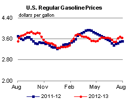
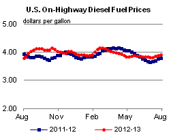
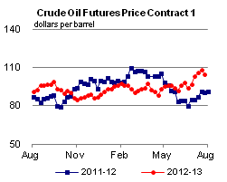
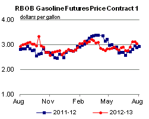
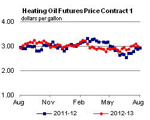
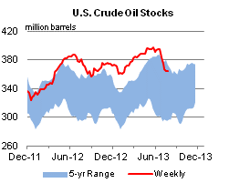
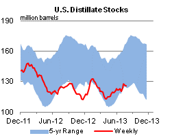
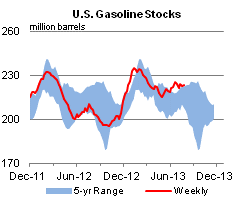
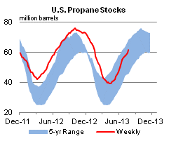

Released: July 31, 2013
Next Release: August 7, 2013
Gasoline Consumption: What Direction is it Heading?
As baseball nears its trading deadline on July 31, some teams need to decide if their recent upward trend is a short-term phenomenon or something that the team can build the future around. But baseball is not the only industry where midsummer trends are examined closely to determine if they are indicative of the future. The same can be said for U.S. gasoline consumption in the summer. It is not unusual for gasoline consumption to pick up during the summer. This year, however, gasoline product supplied (EIA's proxy for consumption) as reported in EIA weekly data has shown a more pronounced seasonal rise compared with previous years. From early May to the week ending July 5, U.S. product supplied for gasoline increased 10 percent to 9.3 million barrels per day (bbl/d) (Figure 1). However, this recent uptick in demand is unlikely to represent the beginning of a major boost in demand. Even with the recent rise, 2013 year-to-date gasoline consumption is almost unchanged from last year, and the estimated rise in gasoline demand is based on weekly product-supplied data that could change as more data, particularly on U.S. exports, become available.
{kind=link}
For the weeks ending June 28 and July 5, product supplied for gasoline surpassed the 5-year average, based on data from the Weekly Petroleum Status Report (WPSR) through July 19, gasoline consumption in 2013 has averaged 8.6 million bbl/d, 0.4 million bbl/d below the 5-year average and marginally above 2012 average consumption.
However, at least some of the recent increase in reported gasoline consumption could be a result of the way EIA estimates weekly data, rather than an actual sharp increase in consumption. EIA uses a proxy for weekly U.S. gasoline consumption called product supplied, which measures the disappearance of a particular product from the primary supply chain. The WPSR uses seven surveys to collect data from respondents across the primary petroleum supply chain, made up of refineries, pipelines, bulk and blending terminals, gas processing plants and fractionators, oxygenate producers, and importers.
For a specific refined petroleum product, product supplied is equal to production plus imports minus stock change and exports.
The element subject to the most change between the WPSR product-supplied number and the monthly number published later in Petroleum Supply Monthly (PSM) is U.S. exports. The export data used in EIA's monthly product-supplied calculation come from the U.S. Bureau of the Census, which releases the data monthly with a two-month lag. As a result, the weekly product-supplied data considered in this discussion are estimated initially using two-month-old export data. As a result, when the official U.S. export data is released, the weekly estimates of gasoline product supplied are updated (Figure 2).
{kind=link}
Adjustments to the WPSR motor gasoline export number have ranged between +300,000 to -280,000 bbl/d, meaning the recent perceived jump in gasoline demand is within the range of historical adjustments. This suggests that while the seasonal upward trend in gasoline demand is likely to remain, the recent surge in demand over the previous year and the 5-year average may become less pronounced once Census releases export data for June and July are released (May data are currently the latest available).
According to trade press, U.S. gasoline exports in June and July are likely to have increased as a result of demand from West Africa, which typically receives gasoline from European refineries. However, price-advantaged domestic crudes allow U.S. refiners to economically produce and ship gasoline to West Africa in greater quantities. If this is actually the case, apparent surge in demand witnessed since May, may prove to have been illusionary like the pennant hopes of many baseball teams.
Gasoline prices fall; diesel fuel up for a fourth week
The U.S. average retail price of regular gasoline decreased four cents to $3.65 per gallon as of July 29, 2013, up 14 cents from last year at this time. Prices fell in all regions except the Rocky Mountains, where the price increased two cents to $3.64 per gallon. The Midwest price is $3.58 per gallon, a decrease of nine cents from last week. The Gulf and West Coast prices both dropped three cents, to $3.48 per gallon and $3.93 per gallon, respectively. Rounding out the regions, the East Coast price is down a penny to $3.65 per gallon.
The national average diesel fuel price increased one cent to $3.92 per gallon, 12 cents higher than last year at this time, and the highest price since mid-April. Prices rose in all regions, with the largest increase coming in the Rocky Mountains, where the price is up five cents to $3.91 per gallon. The East Coast, Midwest, and West Coast prices all increased one cent, to $3.93, $3.89, and $4.05 per gallon, respectively. Rounding out the regions, the Gulf Coast price is up less than a penny to $3.85 per gallon.
Propane inventories continue to build
Total U.S. inventories of propane increased 1.9 million barrels from last week to end at 61.3 million barrels, but are 6.2 million barrels (9.1 percent) lower than the same period a year ago. The Gulf Coast and Midwest regions led the gain, with each rising by 0.8 million barrels. Rocky Mountain/West Coast stocks increased by 0.2 million barrels, and East Coast stocks increased by 0.1 million barrels. Propylene non-fuel-use inventories represented 4.8 percent of total propane inventories.
Text from the previous editions of This Week In Petroleum is accessible through a link at the top right-hand corner of this page.
|  |  | ||||||
| Retail Data | Change From Last | Retail Data | Change From Last | ||||
| 07/29/13 | Week | Year | 07/29/13 | Week | Year | ||
| Gasoline | 3.646 | Diesel Fuel | 3.915 | ||||
|  |  | ||||||||||||||||||||||||||
|
 | ||||||||||||||||||||||||||
| *Note: Crude Oil Price in Dollars per Barrel. | |||||||||||||||||||||||||||
|  |  | ||||||
|  |  | ||||||
| Stocks Data | Change From Last | Stocks Data | Change From Last | ||||
| 07/26/13 | Week | Year | 07/26/13 | Week | Year | ||
| Crude Oil | 364.6 | Distillate | 126.0 | ||||
| Gasoline | 223.5 | Propane | 61.296 | ||||